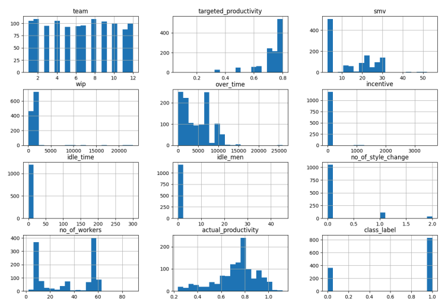
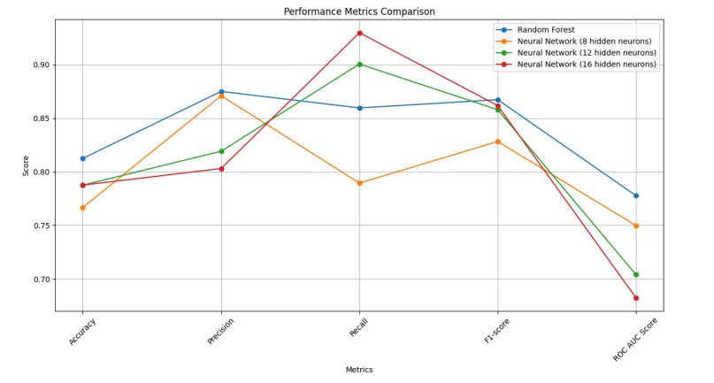

Game Design Portfolio
This project involved developing machine learning models to classify garment employee productivity as satisfactory or unsatisfactory. The challenge was to handle an imbalanced dataset and identify key factors influencing productivity. I used Python with libraries such as NumPy, Keras, and Matplotlib for data preprocessing, model training, and results analysis. The end goal was to implement a model that could be deployed in a real-world setting to aid decision-making in garment factories.
The dataset included various workplace metrics such as efficiency, overtime hours, and department type. I handled missing values, normalised numerical features, and encoded categorical data to ensure optimal model performance. A major part of this stage was to apply feature engineering, creating new variables and transforming existing ones to better capture patterns in the data.
The bar graphs below visualise the distributions of features in the dataset after preprocessing and preparing the data for modelling. These feature distributions were key in understanding the structure of the data and helped inform the model-building process.
For model development, I started with a simple neural network architecture built using Keras. This model used one hidden layer with a ReLU activation function, and dropout layers to prevent overfitting. After experimenting with various hyperparameters such as learning rate and dropout rate, I explored more advanced models, including Random Forests. The Random Forest classifier outperformed the neural network in handling imbalanced data and provided better generalization on unseen data.
The plot below visualises the accuracy, precision, recall, and F1-score of the models tested throughout the project. These metrics were essential in evaluating the effectiveness of the models and identifying the best-performing approach for classifying employee productivity.
Full Code Documentation:
You can view the full code and documentation for this project by following the link below: